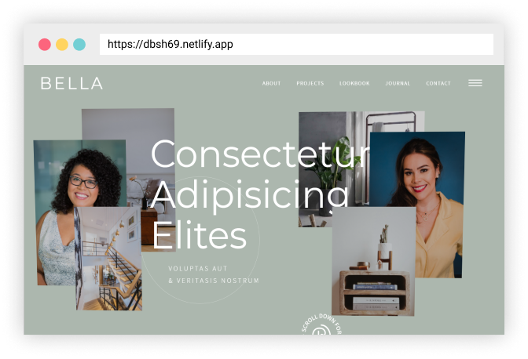

work
about
Welcome
Jowd — Développeur d'Applications Web & Mobile focus UI/UX, Javascript, TDD, Reactjs. Domicilié à Lyon.
"Git" A Workflow
Intégrer les pratiques, les outils, modernes et professionnels du travail de développeur
Lire le cas d'étude
»

"The Creative Web"
Enrichir l'Expérience Utilisateur avec les librairies BarbaJS, Greensock...
Lire le cas d'étude
»
Reactjs Workshop
States Management, Data Structure, Tests Suites & Design Patterns
Lire le cas d'étude
»